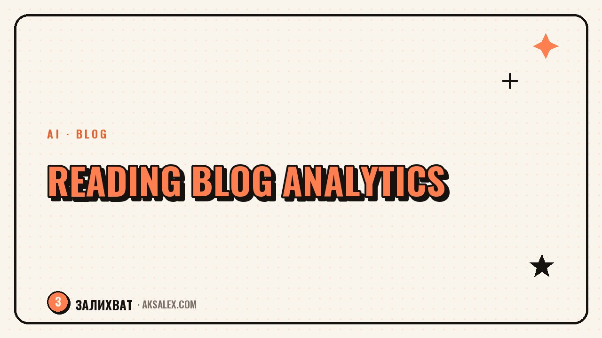

How to Read Your Blog Analytics and Grow

Why likes and followers lie
Follower count is a vanity metric. It looks nice, but it tells you nothing about whether your content actually reaches people. You can have ten thousand followers and a reach of five hundred, because the algorithm stopped showing your videos even to them a long time ago.
It's far more honest to look at viewer behavior: did they watch to the end, did they save it, did they click through to your profile. Those actions tell the algorithm the content is valuable, so it carries it to a new audience. That's why engagement metrics, not the raw numbers under a post, are what help you grow.
Don't watch how many people are subscribed - watch what they do with your content. The action matters more than the number.
The metrics that actually move a blog
Start with retention in the first few seconds - it's the algorithm's main filter. If people drop off by the second second, the hook is weak. Next, look at watch-through rate to the end: it shows whether the video holds attention the whole way.
A short checklist of metrics
- First 3-second retention - is the hook working.
- Average watch-through rate - does the video hold to the end.
- Reach and share of non-followers - is the algorithm carrying content to new people.
- Saves and reshares - does the viewer find the content useful.
- Profile visits and follows - does the video convert a viewer into a follower.
Saves and reshares matter most: with them a viewer votes that the content is worth coming back to or showing a friend. The algorithm pushes videos with high saves the most eagerly, so those formats are worth repeating.
How to read the numbers without panic
Don't look at a single post, look at the trend over two to four weeks. One flop means nothing, but a recurring drop in watch-through on a certain format is a signal. Compare like with like: tip videos with tip videos, not with personal stories.
The benchmarks below help you see where you stand. They aren't hard rules, just reference points: if your numbers are far below, there's something to fix; if they're above, the format is worth scaling.
| Metric | Concerning | Normal | Excellent |
|---|---|---|---|
| 3-sec retention | below 50% | 60-70% | above 80% |
| Watch-through rate | below 20% | 30-45% | above 55% |
| Share of non-followers | below 30% | 50-70% | above 80% |
| Saves per 1,000 impressions | fewer than 2 | 5-10 | more than 15 |
Keep a simple sheet: date, format, topic, reach, watch-through, saves. After a month you'll spot patterns the app doesn't show you - which topics and formats steadily pull the blog upward.
From numbers to decisions
Analytics are useless if nothing changes afterward. Each week, pull out one takeaway and one action. Low first-seconds retention - you rewrite the hooks. Good reach but few follows - you strengthen the call to action and the profile layout. High saves on one topic - you build a series around it.
A simple growth loop
- Once a week, write down your three best and three worst posts.
- Find what the best ones have in common: topic, format, length, hook.
- Repeat the winning combination and drop what consistently flops.
- Test the hypothesis next week against the same metrics.
That way a blog grows not on inspiration but on repeating what works. You stop guessing and start leaning on what your own numbers have already confirmed.
Tools, and how not to drown in data
The social network's built-in stats are enough at the start - they cover retention, reach, and saves. You don't need paid services until you can read the basic numbers. First, learn to work with what's already at hand.
To avoid drowning, check your stats once a week, not after every post. Hourly checks only wear you out and get in the way of judging the trend clearly. Set aside one day, go through the numbers in a batch, and write down your takeaways - that's enough for steady growth.
Bottom line: three numbers instead of thirty
If you get lost, come back to three metrics: first-seconds retention, watch-through rate, and saves. They answer the key questions - did it hook, did it hold, was it useful. Everything else is detail you can get to later.
Growing a blog isn't about trying harder, it's about doing more of what the numbers already show worked.
Frequently Asked Questions
How often should I check my blog stats?
Once a week is enough. More frequent checks give you no new takeaways - they just wear you out and get in the way of judging the trend over a reasonable stretch of time.
Which metric matters most for growth?
First-seconds retention and watch-through rate. They're exactly what tells the algorithm the content is worth showing to new people, which directly affects your reach.
Why is my reach growing but not my followers?
The video grabs attention but doesn't motivate a follow. Strengthen the call to action at the end, set up your profile so it's clear what the blog is about, and give people a reason to stay.
Do I need paid analytics services?
Not at the start. The social network's built-in stats cover every basic metric. Paid tools make sense once you can already read the simple numbers with confidence.
What should I do about one flop of a post?
Nothing drastic. One post isn't a trend. Look at the trend over several weeks and react only to recurring drops, not to a single result.
Enjoyed this one? Here's what to read next. How AI creates subtitles and translates videos: auto-transcription, translation and voiceover across languages.
Read the article →not by hand